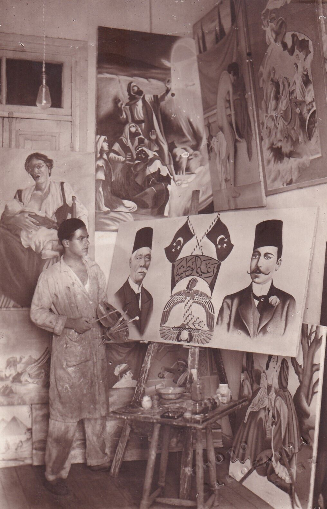

CONTACT / PROJECT INQUIRY
What are you trying to connect?
Share the material, question, and context. A clear starting point helps shape a useful conversation about the work.

CONTACT / PROJECT INQUIRY
Share the material, question, and context. A clear starting point helps shape a useful conversation about the work.
